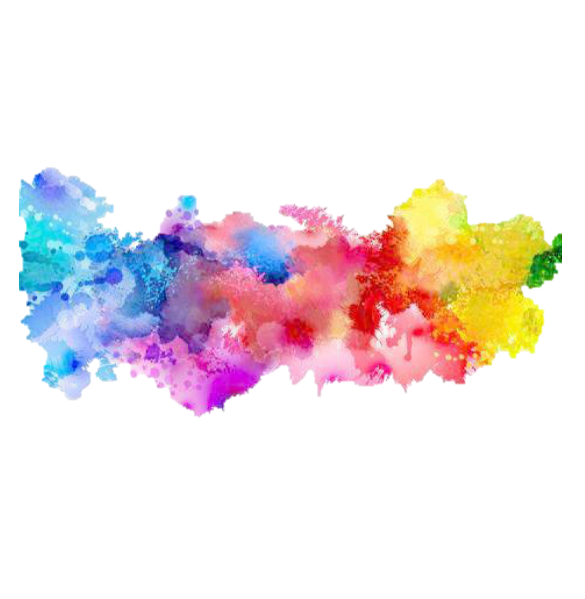

<html lang="en">
<head>
    <meta charset="utf-8">
    <meta http-equiv="x-ua-compatible" content="ie=edge">
    <meta name="viewport" content="width=device-width, initial-scale=1">

    <!-- Name of your awesome camera app -->
    <title>AR Camera App</title>

    <script type="text/javascript" src="cv.js"></script> 
    <script type="text/javascript" src="aruco.js"></script> 
    <!-- Link to your main style sheet-->
    <link rel="stylesheet" href="style.css">
    <!-- Add imgage to camera -->
    <!--  -->

    <script>
        var video, canvas, context, imageData, detector;
          function onLoad() {
              video = document.getElementById("video");
              canvas = document.getElementById("canvas");
              context = canvas.getContext("2d");
            //   canvas.width = parseInt(canvas.style.width);
            //   canvas.height = parseInt(canvas.style.height);

              canvas.width = window.innerWidth;
              canvas.height = window.innerHeight;
  
              // Set constraints for the video stream
              var constraints = { video: { facingMode: "environment" }, audio: false };
              function cameraStart() {
                  navigator.mediaDevices
                      .getUserMedia(constraints)
                      .then(function(stream) {
                      track = stream.getTracks()[0];
                      video.srcObject = stream;
                  })
                  .catch(function(error) {
                      console.error("Oops. Something is broken.", error);
                  });
              }
              cameraStart();
              detector = new AR.Detector();
              
              requestAnimationFrame(tick);
          }
  
          function tick(){
              requestAnimationFrame(tick);
              if (video.readyState === video.HAVE_ENOUGH_DATA){
                  snapshot();
                  context.strokeRect(20,20, 100, 100);
  
                  var markers = detector.detect(imageData);
                  
                  drawCorners(markers);
                  //   drawImage(markers);
                  // drawId(markers);
              }
          }
          
          function snapshot(){
              context.drawImage(video, 0, 0, canvas.width, canvas.height);
              imageData = context.getImageData(0, 0, canvas.width, canvas.height);
          }
  
          function drawCorners(markers){
              let corners, corner, i, j;
      
              context.lineWidth = 3;
  
              for (i = 0; i !== markers.length; ++ i){
                  corners = markers[i].corners;
          
                  context.strokeStyle = "red";
                  context.beginPath();
              
              for (j = 0; j !== corners.length; ++ j){
              corner = corners[j];
              context.moveTo(corner.x, corner.y);
              corner = corners[(j + 1) % corners.length];
              context.lineTo(corner.x, corner.y);
              }
  
              context.stroke();
              context.closePath();
              
              context.strokeStyle = "green";
              context.strokeRect(corners[0].x - 2, corners[0].y - 2, 40, 40);
            }
          }
  
          // function drawImage(markers){
          //   var img = document.getElementById("test--image");
          //   context.drawImage(img,10,10);
          // }
          window.onload = onLoad;
      </script>

</head>

<body>
    
    <!-- Camera view -->
    <video id="video" autoplay playsinline></video>
    <!-- <video id="video" autoplay="true" style="display:none;" ></video> -->
    <!-- Camera sensor -->
    <!-- <canvas id="canvas" style="width:640px; height:480px;"></canvas> -->
    <canvas id="canvas"></canvas>
</body>
</html>
